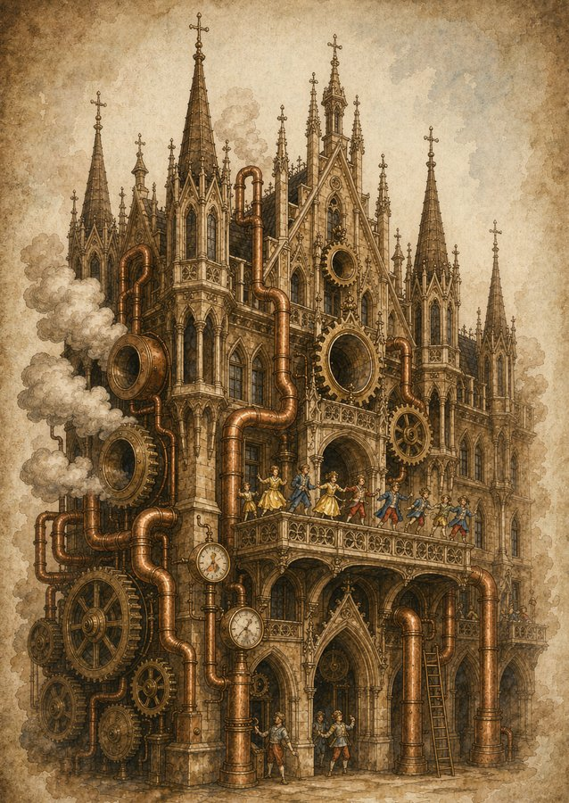
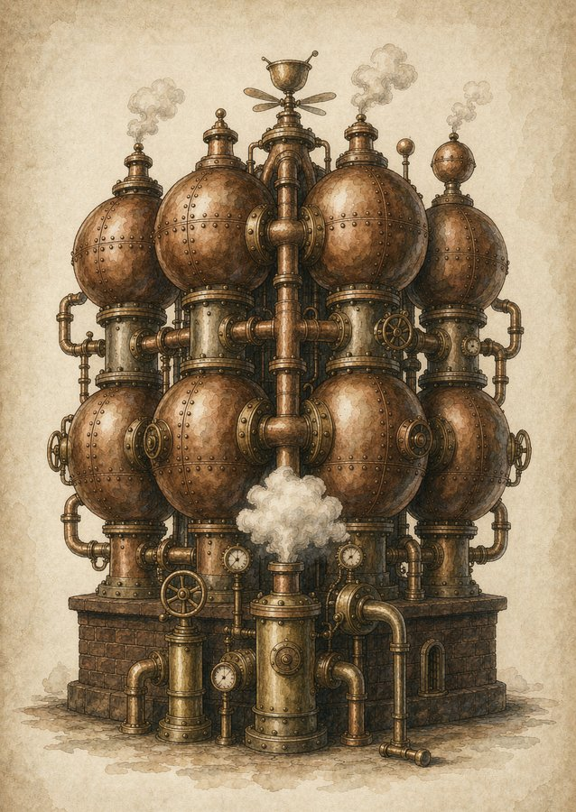
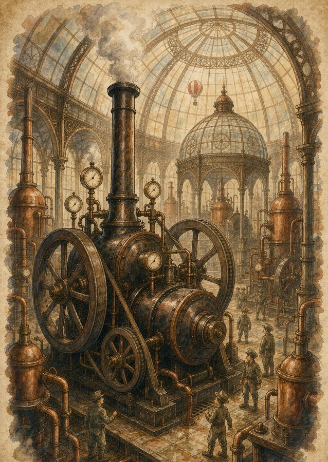
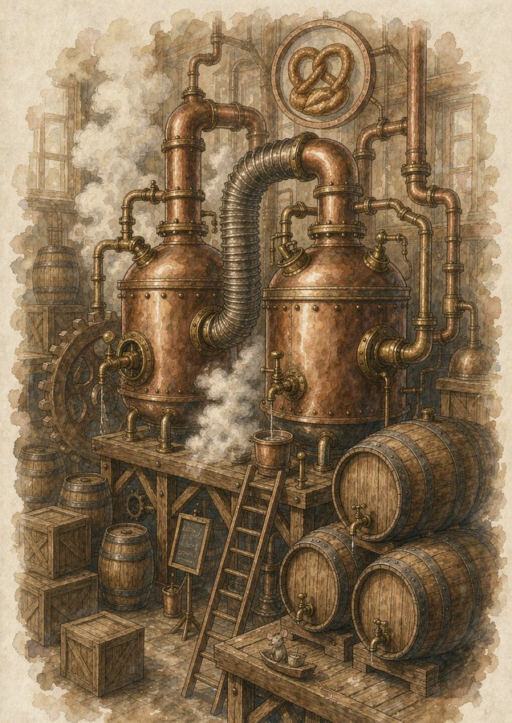

Chapter 02
THE CITY OF INVENTORS
Le Petit Prince · Voyage à Munich
小王子 · Munich 机械之旅
蒸汽升腾，齿轮咬合。小王子降落在机器的心脏，
在四座机械星球之间，重新学会「建造」这件事。
MUNICH · GERMANY
What makes us build?


玛丽恩广场 · 新市政厅
钟表匠的星球
点击查看介绍

BMW 四缸大厦
机械师的星球
点击查看介绍

德意志博物馆
工程师的星球
点击查看介绍

皇家啤酒屋
酒鬼的星球
点击查看介绍

小王子换上了黄铜飞行帽与护目镜，玫瑰被好好别在他的小行星上